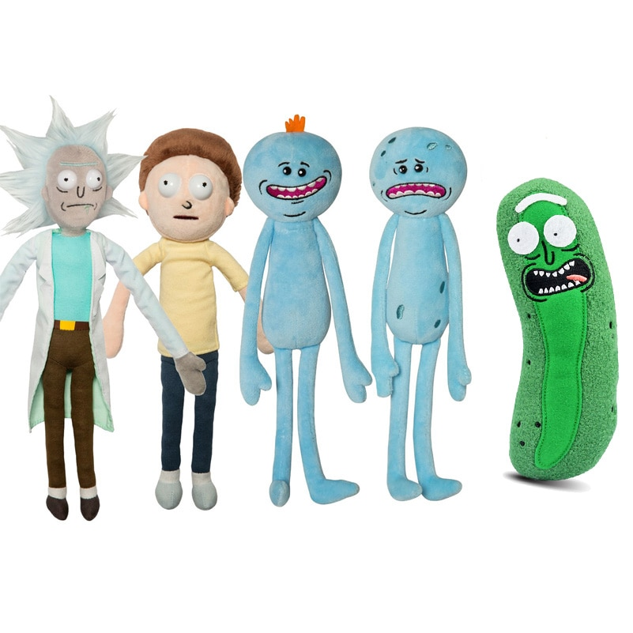
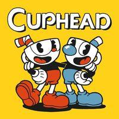

¿Que es los niños que no se burlan?
Que los niños no se burlen de otros niños por ser different y hacer las cosas que les gustan
¿Porque el bullying es malo?
por que el bullying puede burlar alguien y es mal de que unos niños estan burlando a alguien de los niños y cuando alguien estan burlando a ti le digas a alguien y despues le digan de que no se puede burlan alguien del bullying algunos niños se puede burlan y se siente triste y enojado
¿Como funciona los niños que no se burlan?
los niños no quire burlan a alguien de que quire deternerlo y decir de que no quires burlan lo mando mensaje en el celular de que esta burlando alguien y cuando lo digo la maestra el bullying se ve en detancion cuando los padres le digan de que bular alguien es malo y tambien lo puedes mandar a sus amigos de que bullying va ser mal